Vue3 + webpack 多入口
写在最前面：切换npm源。
- 查看npm源地址(默认为： https://registry.npmjs.org)
-
npm config get registry - 修改源地址
-
# registry.npm.taobao.org 的 HTTPS 证书到期 npm config set registry https://registry.npm.taobao.org # 2024-02-22 更新 # 请使用最新（下方）的 npmjs.com 镜像，官网：https://npmmirror.com/ npm config set registry https://registry.npmmirror.com
这里简单的记录一下：Vue3 + webpack下的多入口demo。该demo并没有使用
最简：跑起来就行 代码下载
这是第一步，仅仅是Vue3 + webpack的组合，只是弄了个多入口。没有使用单文件组件、
目录树
先看一下demo目录结构，编译前后做个对比：

上面的对比图，你可以忽略tree.txt文件。你可以使用下面的命令生成目录结构文件：
tree /f >tree.txt
html和对应的js
开篇说了处理多个入口页面，所以这里创建了两个文件夹（module1和module2）来模拟没有任何关系的两个子模块。这两个模块的代码没有什么大的不同，只是1和2的区别。
模块1的路径：
模块2的路径：
import * as Vue from "vue";
Vue.createApp({
data() {
return {
msg: "Hi，这里是 Vue3 + webpack 多入口 示例项目 模块1 入口页面"
}
}
}).mount('#vue3Module1Entry');
package.json
{
"name": "vue3-webpack-multi-entry-demo",
"version": "1.0.0",
"main": "index.js",
"license": "MIT",
"scripts": {
"start": "webpack --progress --watch"
}
}
# 你可以用下面的命令安装
yarn add vue@next
yarn add html-webpack-plugin webpack webpack-cli -D
webpack.config.js
// yarn add vue@next
// yarn add html-webpack-plugin webpack webpack-cli -D
const path = require('path');
const webpack = require('webpack');
const HtmlWebPack = require('html-webpack-plugin');
let multiPageConfig = [{
entry: {
sourcePath: "./src/module1/js/index.js",
// entry.key中以'/'分割，最后一项是文件的名称，前面的都是目录
targetPath: "module1/js/index"
},
htmlWebPack: {
sourcePath: './src/module1/index.html',
targetPath: 'module1/index.html'
}
}, {
entry: {
sourcePath: "./src/module2/js/index.js",
targetPath: "module2/js/index"
},
htmlWebPack: {
sourcePath: './src/module2/index.html',
targetPath: 'module2/index.html'
}
}];
let tempModuleExportsObj = {
mode: 'development', // production | development
devtool: "source-map",
entry: {},
output: {
filename: '[name].js',
path: path.resolve(__dirname, './www'),
//publicPath: '/'
// 为了可以在github上可以浏览，这里做下面的修改
publicPath: '/vue3/www/'
},
module: {
rules: []
},
resolve: {
alias: {
// [Vue warn]: Component provided template option but runtime compilation is not supported in this build of Vue. Configure your bundler to alias "vue" to "vue/dist/vue.esm-bundler.js".
'vue': 'vue/dist/vue.esm-bundler.js'
}
},
plugins: [
// Feature flags __VUE_OPTIONS_API__, __VUE_PROD_DEVTOOLS__ are not explicitly defined. You are running the esm-bundler build of Vue, which expects these compile-time feature flags to be globally injected via the bundler config in order to get better tree-shaking in the production bundle.
new webpack.DefinePlugin({
__VUE_OPTIONS_API__: true,
__VUE_PROD_DEVTOOLS__: false,
})
]
};
multiPageConfig.forEach(singlePage => {
let tempEntryObj = {};
tempEntryObj[singlePage.entry.targetPath] = singlePage.entry.sourcePath;
Object.assign(tempModuleExportsObj.entry, tempEntryObj);
let tempHtmlWebPackOption = {
inject: true,
hash: true, //开启hash ?[hash]
chunks: [singlePage.entry.targetPath], //页面要引入的包
};
Object.assign(tempHtmlWebPackOption, {
template: singlePage.htmlWebPack.sourcePath,
filename: singlePage.htmlWebPack.targetPath
});
tempModuleExportsObj.plugins.push(new HtmlWebPack(tempHtmlWebPackOption));
});
module.exports = tempModuleExportsObj;
添加单文件组件支持 代码下载
先来张图看看结构的变化
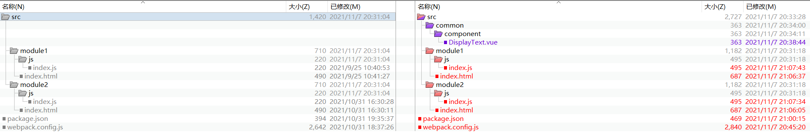
新增单文件组件
既然是单文件组件，先来一个，尽量简单（路径为：/src/common/component/DisplayText.vue）：就是展示一些文本。下面是组件代码：
{{value}}
两个html页面更新
两个html页面都添加下面的内容
两个html页面对应的js更新
对应的js文件用下面的替换（记得改一下两个页面的区别）
import * as Vue from "vue";
import DisplayText from '../../common/component/DisplayText.vue';
Vue.createApp({
data() {
return {
msg: "Hi，这里是 Vue3 + webpack 多入口 示例项目 模块1 入口页面",
displayText: "再说一遍，这里是 模块1 入口页面",
displayTextStyle: {
fontWeight: "bold"
}
}
},
components: {
DisplayText
}
}).mount('#vue3Module1Entry');
package.json更新
新增
# 你可以用下面的命令安装
yarn add vue@next
yarn add @vue/compiler-sfc html-webpack-plugin vue-loader@next webpack webpack-cli -D
webpack.config.js更新
引入
// 第二版：添加的内容
const {
VueLoaderPlugin
} = require('vue-loader');
let tempModuleExportsObj = {
module: {
rules: [
// 第二版：添加的内容
{
test: /\.vue$/,
use: ['vue-loader']
}
]
},
plugins: [
// 第二版：添加的内容
new VueLoaderPlugin()
]
};
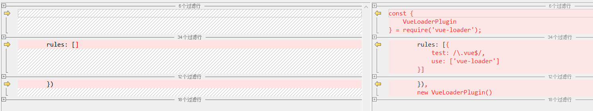
LESS支持 代码下载
还是先来张图看看结构的变化
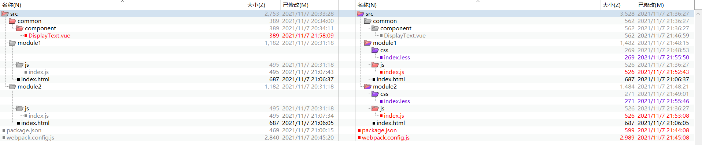
单文件组件添加LESS
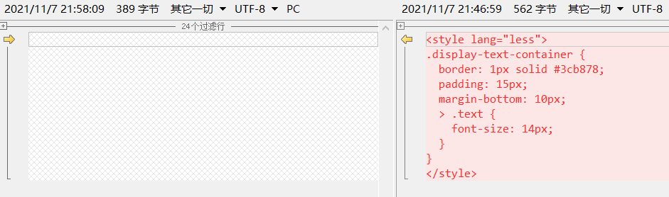
新增LESS文件
两个模块都添加
// 两个LESS文件公共部分
*,
*::before,
*::after {
box-sizing: border-box;
}
html,
body {
height: 100%;
width: 100%;
margin: 0;
}
// 模块1 入口页面 样式文件
#vue3Module1Entry {
height: 100%;
width: 100%;
padding: 20px;
overflow: hidden;
color: chocolate;
}
// 模块2 入口页面 样式文件
#vue3Module2Entry {
height: 100%;
width: 100%;
padding: 10px;
overflow: hidden;
color: blue;
}
引入LESS文件
两个入口页面对应的JS文件引入LESS（这里放在了JS文件的最上方）
// 两个入口页面对应的JS文件新增引入样式
import '../css/index.less';
package.json更新
新增
# 你可以用下面的命令安装
yarn add vue@next
yarn add @vue/compiler-sfc css-loader html-webpack-plugin less less-loader style-loader vue-loader@next webpack webpack-cli -D
webpack.config.js更新
rules中添加LESS文件处理
let tempModuleExportsObj = {
module: {
rules: [
// 第三版：添加的内容
{
test: /\.less$/,
use: ['style-loader', 'css-loader', 'less-loader']
}
]
}
};
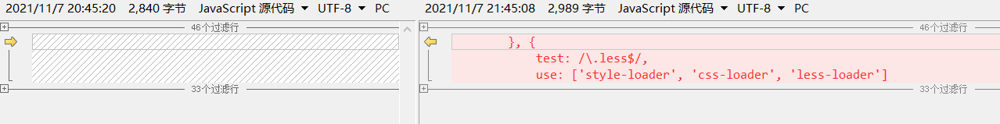
静态文件-图片 代码下载
还是先来张图看看结构的变化
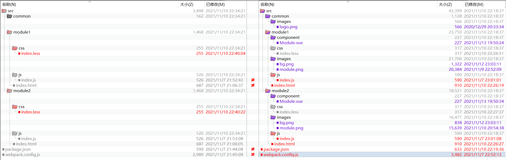
1、公共文件夹
2、两个模块下各添加两张图片：一张作为
3、两个模块下都创建一个特有单文件组件（路径为：/src/module1/component/Module.vue）,这两个组件的代码相同,该组件展示一张特有的图片；
单文件组件：这里展示一张图片

4、两个入口文件对应的LESS文件以
// 新增加的内容
body {
background: url(../images/bg.png) repeat-x;
}
此次添加的图片你可以在这里找到： 快去找图片吧
两个html页面更新
两个html页面对应的js更新
// 引入组件
import Module from '../component/Module.vue';
// 注册组件
components: {
Module
}
package.json更新
新增
yarn add vue@next
yarn add @vue/compiler-sfc css-loader html-loader html-webpack-plugin less less-loader style-loader vue-loader@next webpack webpack-cli -D
webpack.config.js更新
rules中添加HTML文件处理以及静态文件（这里是图片）处理
let tempModuleExportsObj = {
module: {
rules: [
// 第四版：添加的内容
{
test: /\.html$/,
use: ['html-loader']
},
{
test: /\.(jpg|jpeg|png|gif|svg|eot|svg|ttf|woff|woff2)$/,
type: 'asset/resource',
generator: {
filename(a, b) {
// a.asdf => "src/common/images/logo.png"
return path.relative(path.join(__dirname, "src"), path.resolve(a.filename)).split(path.sep).join("/");
}
}
}
]
}
};
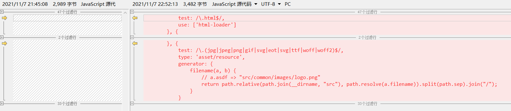
记得上次写的时候是通过
JS转ES5代码下载
转ES5在实际项目中用的太多了，之前在vue2.x的时候也弄了，但是此时按照原来的方式就行不通了，出现了一些问题，最后发现竟然是
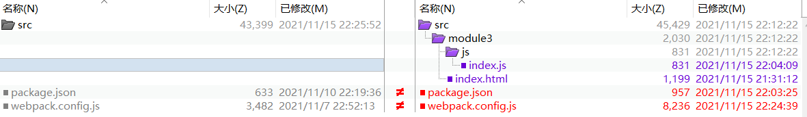
原来的vue相关的代码没有变动，只是增加了一个新的模块（module3）来测试ES5的转换（路径为：/src/module3/index.html 和 /src/module3/js/index.js）。
新增的html页面
新增的js
document.addEventListener("DOMContentLoaded", function () {
document.getElementById("array-from-1").innerHTML = Array.from("利用Array.from将字符串转成数组！");
document.getElementById("array-from-2").innerHTML = JSON.stringify(Array.from({
0: null,
1: undefined,
2: true,
3: 666,
4: "我是字符串",
5: Symbol("key1"),
6: {
key1: 1,
key2: 2
},
7: ["a", "b", "c"],
8: function () {},
length: 9,
}));
document.getElementById("array-from-3").innerHTML = Array.from({
1: "b",
3: "d",
length: 6
});
Promise.resolve("Promise的返回结果：888").then((ret) => {
document.getElementById("promise-1").innerHTML = ret;
});
});
package.json更新
在处理ES6+转ES5的时候，当时就查到了两种处理方式，添加的依赖项不同，这里都记录一下：
# 这里是没有转码的命令（也就是上一版本的），你可以先试试他，之后再试试下面的两种方式，做一下对比
yarn add vue@next
yarn add @vue/compiler-sfc css-loader html-loader html-webpack-plugin less less-loader style-loader vue-loader@next webpack webpack-cli -D
# 你可以用下面的命令安装
yarn add vue@next
# 方式一添加的依赖：@babel/core @babel/preset-env babel-loader core-js regenerator-runtime
yarn add @babel/core @babel/preset-env @vue/compiler-sfc babel-loader core-js css-loader html-loader html-webpack-plugin less less-loader regenerator-runtime style-loader vue-loader@next webpack webpack-cli -D
# 你可以用下面的命令安装
yarn add vue@next
# 方式二添加的依赖：@babel/core @babel/plugin-transform-runtime @babel/preset-env @babel/runtime @babel/runtime-corejs3 babel-loader
yarn add @babel/core @babel/plugin-transform-runtime @babel/preset-env @babel/runtime @babel/runtime-corejs3 @vue/compiler-sfc babel-loader css-loader html-loader html-webpack-plugin less less-loader style-loader vue-loader@next webpack webpack-cli -D
webpack.config.js更新
// yarn add vue@next
// ES6+转ES5，第一种实现方式新增的依赖：@babel/core @babel/preset-env babel-loader core-js regenerator-runtime
// yarn add @babel/core @babel/preset-env @vue/compiler-sfc babel-loader core-js css-loader html-loader html-webpack-plugin less less-loader regenerator-runtime style-loader vue-loader@next webpack webpack-cli -D
// ES6+转ES5，第二种实现方式新增的依赖：@babel/core @babel/plugin-transform-runtime @babel/preset-env @babel/runtime @babel/runtime-corejs3 babel-loader
// yarn add @babel/core @babel/plugin-transform-runtime @babel/preset-env @babel/runtime @babel/runtime-corejs3 @vue/compiler-sfc babel-loader css-loader html-loader html-webpack-plugin less less-loader style-loader vue-loader@next webpack webpack-cli -D
let multiPageConfig = [
// 第五版：添加的内容
{
entry: {
sourcePath: "./src/module3/js/index.js",
targetPath: "module3/js/index"
},
htmlWebPack: {
sourcePath: './src/module3/index.html',
targetPath: 'module3/index.html'
}
}
];
let tempModuleExportsObj = {
// 第五版：添加的内容
target: ['web', 'es5'],
module: {
rules: [
// 第五版：添加html-loader配置项和添加babel-loader
{
test: /\.html$/,
loader: 'html-loader',
options: {
sources: {
// // 第一版使用的方式，但是不太好，不能过滤标签
// urlFilter: (attrName, value, absolutePath) => {
// // attrName => "src"
// // value => "/p/_/js/main.js"
// // absolutePath => "F:\……\src\module3\index.html"
// if (attrName === "src" && value.startsWith("/")) {
// return false;
// }
// return true;
// },
list: [
"...",
{
tag: "script",
attribute: "src",
type: "src",
filter: (tagName, attrName, kvs, absolutePath) => {
// tagName => "script"
// attrName => "src"
// kvs => [{"name":"src","value":"/p/_/js/main.js"}]
// absolutePath => "F:\……\src\module3\index.html"
let srcKV = null;
if (tagName === "script" &&
attrName === "src" &&
Array.isArray(kvs) &&
(srcKV = kvs.filter(x => x.name === attrName)[0])) {
if (srcKV.value.startsWith("/")) {
return false;
}
}
return true;
}
},
]
}
}
}, {
test: /\.m?js$/,
exclude: /(node_modules|bower_components)/,
use: {
loader: "babel-loader",
options: {
/**
* 第一种方式
* 如果独立使用，你可以使用下面的命令(其他的项目，单独转码使用)
* yarn add @babel/core @babel/preset-env babel-loader core-js html-loader html-webpack-plugin regenerator-runtime webpack webpack-cli -D
*/
presets: [
["@babel/preset-env", {
modules: false,
useBuiltIns: "usage",
corejs: {
version: 3,
proposals: true,
},
targets: {
ie: 8
}
}]
],
/**
* 第二种方式
* 如果独立使用，你可以使用下面的命令(其他的项目，单独转码使用)
* yarn add @babel/core @babel/plugin-transform-runtime @babel/preset-env @babel/runtime @babel/runtime-corejs3 babel-loader html-loader html-webpack-plugin webpack webpack-cli -D
*/
// presets: [
// ["@babel/preset-env"]
// ],
// plugins: [
// ['@babel/plugin-transform-runtime', {
// corejs: {
// version: 3,
// proposals: true
// },
// useESModules: true
// }]
// ]
}
}
}
]
},
};
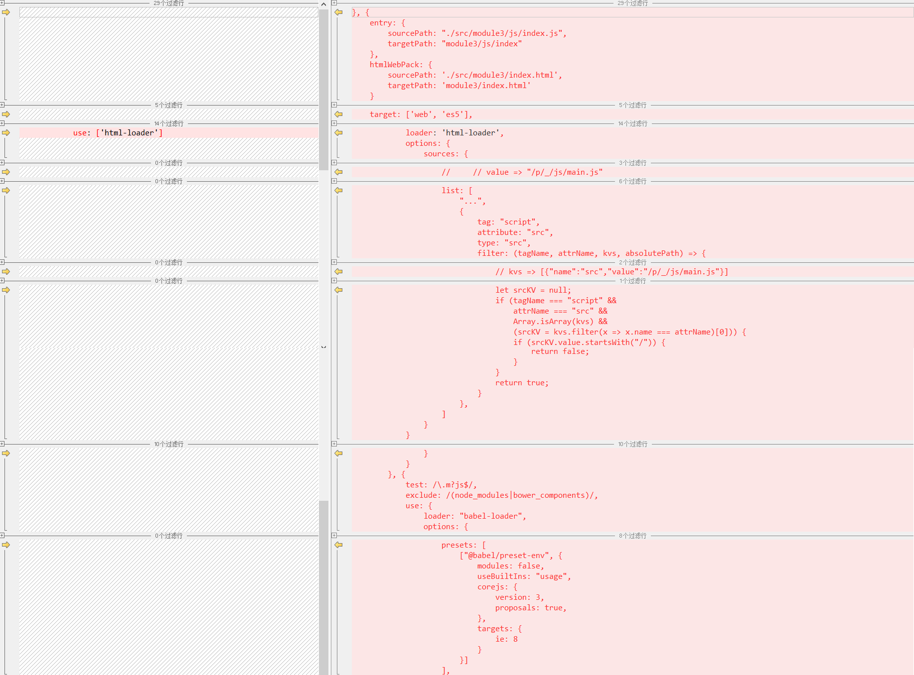
html-loader：这里做了一些配置，目的是排除一些js（站点根目录开始的）
图片中的代码对比：一些注释代码给忽略了，看详细的你可以下载代码。
最后再来看一下转ES5前后的截图对比
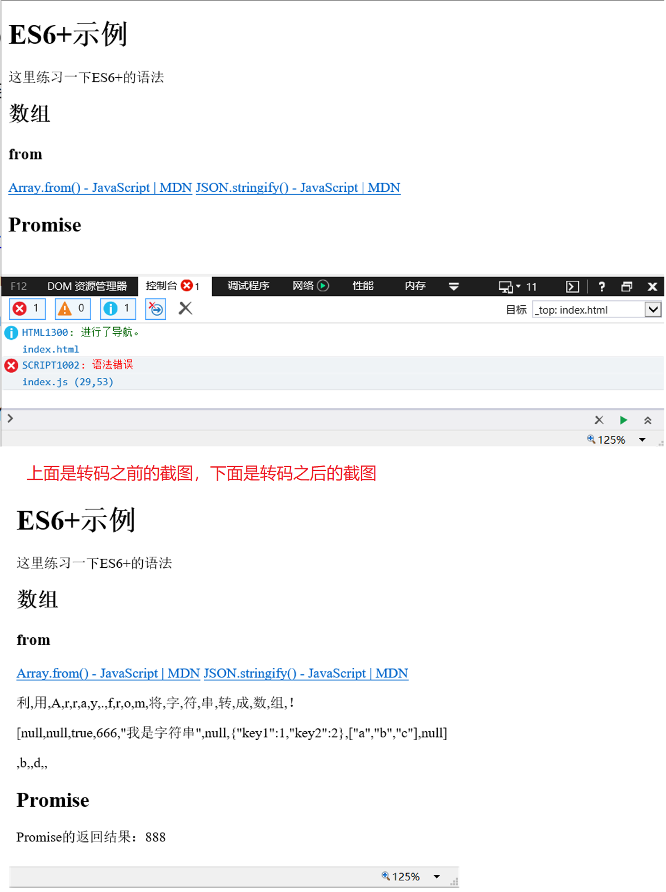
抽取公共JS代码下载
默认打包时将依赖和业务代码都弄到一个JS中了，看着不舒服，希望打包之后的代码也有一个清晰的结构，仅仅是为了看着舒服……看一下目录变化
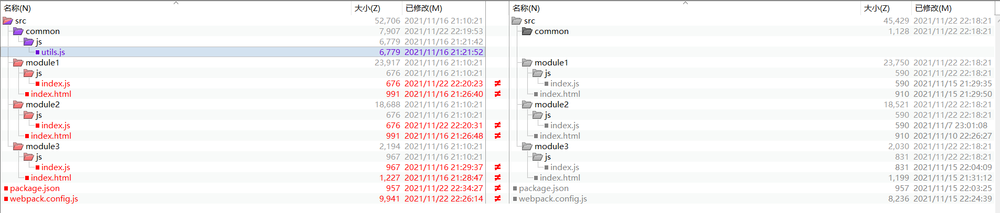
新增公共方法类库
新增公共方法类库（路径为：/src/common/js/utils.js）
/*! utils.js 业务无关通用方法 */
/**
* 获取一个GUID
* 例子：getGUID();=>'AEFC9ABC-1396-494B-AB96-C35CA3C9F92F'
* @returns {string} 返回一个GUID
*/
export const getGUID = function () {
return 'xxxxxxxx-xxxx-4xxx-yxxx-xxxxxxxxxxxx'.replace(/[xy]/g, (c) => {
let r = Math.random() * 16 | 0,
v = c == 'x' ? r : (r & 0x3 | 0x8);
return v.toString(16).toUpperCase();
});
}
两个vue html页面更新
一个GUID：{{guid1}}
两个vue html页面对应js更新
// 第六版新增
import * as utils from '../../common/js/utils';
// 这里放在vue的data中
guid1: utils.getGUID()
另一个非vue html页面更新
两个vue html页面对应js更新
// 第六版新增
import * as utils from '../../common/js/utils';
// 下面的代码放到DOMContentLoaded监听回调中
document.getElementById("guid1").innerHTML = "一个GUID：" + utils.getGUID();
package.json更新
这次并没有添加新的依赖，上图中的变化是版本的升级。
webpack.config.js更新
webpack.config.js添加下面的配置型
{
optimization: { // 优化项
splitChunks: { //分割代码块
cacheGroups: { // 缓存
'my': { // 自己整理的通用方法
priority: 100,
name: "common/js/common", // 以'/'分割，最后一项是文件的名称，前面的都是目录
test: /[\\/]src[\\/](common)[\\/]/,
chunks: 'initial',
minSize: 0,
minChunks: 1,
filename: '[name].js'
},
'core-js': { // 抽取第三方模块：core-js
priority: 10,
name: 'core-js',
test: /[\\/]node_modules[\\/](core-js)[\\/]/,
chunks: 'initial',
minSize: 0,
minChunks: 1,
filename: 'lib/[name]/[name].js'
},
'vue': { // 抽取第三方模块：vue
priority: 9,
name: 'vue',
test: /[\\/]node_modules[\\/](@vue|vue|vue-loader)[\\/]/,
chunks: 'initial',
minSize: 0,
minChunks: 1,
filename: 'lib/[name]/[name].js'
},
'other': { // 公共的代码
priority: 8,
name: "other",
chunks: 'initial',
minSize: 0,
minChunks: 2, // 这个代码引用多少次才需要抽离
filename: 'lib/[name]/[name].js'
}
}
}
}
}
提取CSS到单独的文件中代码下载
前面的示例中用到的css都弄到了JS中，感觉不是很爽，希望webpack源码项目和打包之后的目录尽量保持一致，这也是这片文档的宗旨……
这次提取CSS，代码目录没有改变……
package.json更新
新增
# 你可以用下面的命令安装。上一版本没有添加新的依赖，这里使用ES6转ES5的方式1，在这基础上添加 mini-css-extract-plugin
yarn add vue@next
yarn add @babel/core @babel/preset-env @vue/compiler-sfc babel-loader core-js css-loader html-loader html-webpack-plugin less less-loader mini-css-extract-plugin regenerator-runtime style-loader vue-loader@next webpack webpack-cli -D
webpack.config.js更新
引入
// 第七版：添加的内容
const MiniCssExtractPlugin = require("mini-css-extract-plugin");
let tempModuleExportsObj = {
module: {
rules: [
// 第七版：更新
{
test: /\.less$/,
use: [MiniCssExtractPlugin.loader, 'css-loader', 'less-loader']
}
]
},
plugins: [
// 第七版：添加的内容
new MiniCssExtractPlugin({
filename: ({
chunk
}) => `${chunk.name.replace('/js/', '/css/')}.css`,
})
]
};
最后再看一下，不提取CSS和提取之后的目录对比：
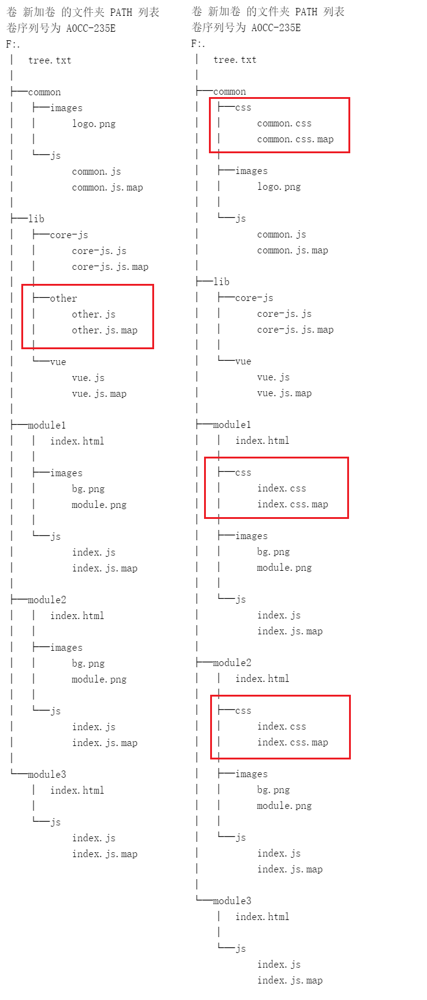
这里还发现了一个问题，html页面对js的引入都添加到了head标签下并且提取css文件都放在script标签的后面，赶紧处理一下吧
查了一下，发现是html-webpack-plugin插件
clean-webpack-plugin 插件和 copy-webpack-plugin 插件
这里在添加两个插件：clean-webpack-plugin 生成之前先删除（你手动添加的文件也会删除）；copy-webpack-plugin 拷贝文件到指定的目录。这两个插件本文档使用的比较简单，就不添加代码下载了。
创建一个文件（路径为：/src/mock/test.json），文件随便写点，你随意
package.json更新
# 你可以用下面的命令安装
yarn add clean-webpack-plugin copy-webpack-plugin -D
webpack.config.js更新
// 第八版：添加的内容
const {
CleanWebpackPlugin
} = require('clean-webpack-plugin');
const CopyWebpackPlugin = require('copy-webpack-plugin');
let tempModuleExportsObj = {
plugins: [
// 第八版：添加的内容
new CleanWebpackPlugin(),
new CopyWebpackPlugin({
patterns: [{
from: 'src/mock',
to: 'mock'
}, ]
})
]
};